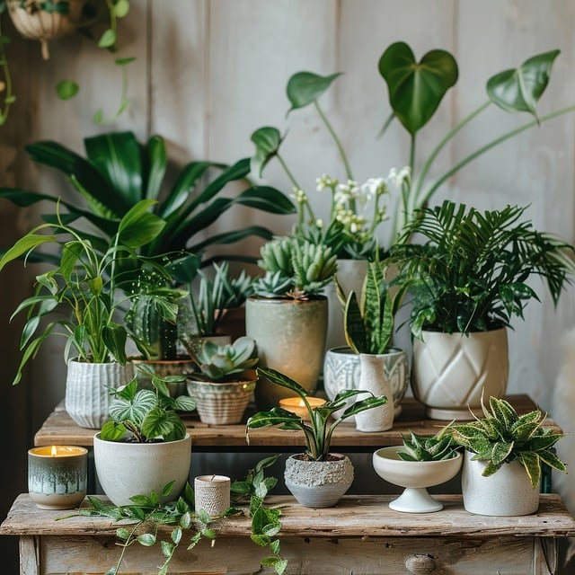

Nosotros
Creemos que un mundo lleno de plantas,- es un mundo mejor.
Nuestro compromiso
En Verdin queremos convertirnos en tu lugar favorito para todo lo relacionado con el mundo de las plantas: desde diferentes tipos de plantas, macetas, hasta consejos y programas de cuidados personalizados.

Cuidar las plantas
Dada la importancia de las plantas para Verdín, es esencial cuidarlas de manera responsable. La deforestación, la contaminación y el cambio climático amenazan su supervivencia. Adoptar prácticas sostenibles son pasos fundamentales para asegurar la continuidad de los beneficios que las plantas brindan.